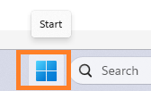
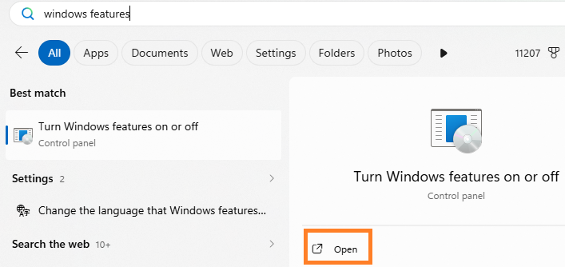
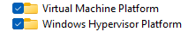

Fix: Virtual Machine Platform is Turned Off
If you saw a red X next to "Hardware Virtualization" or "Virtual Machine Platform" in the Cowork Readiness Checker, this is the most common result — and usually the easiest fix.
Think of it like a power switch that just needs to be flipped on.
What you'll do
You'll turn on two Windows features:
- Virtual Machine Platform (VMP)
- Windows Hypervisor Platform (WHP)
This takes about 5 minutes, and Windows will walk you through most of it.
Step-by-step instructions
1. Open the Start menu
- Click the Windows icon in the bottom-left corner of your screen.

2. Search for Windows Features
- Type:
Windows Featuresand press Enter.

- A window called "Turn Windows features on or off" will open.
3. Find and check both features
-
Scroll through the list and check the box next to each of these:
-
✅ Virtual Machine Platform
- ✅ Windows Hypervisor Platform

4. Leave everything else alone
Do not check any of the following — they can cause problems and Cowork does not need them:
| Feature | Leave it alone |
|---|---|
| Hyper-V | ⬜ Do not check |
| Hyper-V Platform | ⬜ Do not check |
| Hyper-V Management Tools | ⬜ Do not check |
| Windows Sandbox | ⬜ Do not check |
| Containers | ⬜ Do not check |
You may have seen Hyper-V mentioned — here's why you should still leave it alone
Cowork's architecture documentation and some forums and blog posts mention that Cowork uses Hyper-V on Windows under the hood. This is technically true- but Cowork manages that automatically. You do not need to turn it on yourself, and doing so will likely conflict with Cowork's own setup and create new problems. If you saw "enable Hyper-V" recommended somewhere online, that advice does not apply here. The only two features you need are the ones listed above.
5. Click OK
{kind=link}
Windows will install the features. This may take a few minutes — let it finish.
6. Restart your computer
- When prompted, restart. This step is required — the features won't activate until you do.
{kind=link}
7. Run the Cowork Readiness Checker again
After restarting, open the checker. If the red X items are gone, you're ready to install Cowork. 🎉
Still seeing red X items after restarting?
If the errors are still there after completing the steps above, something else is blocking the virtual machine from starting. This is less common but very fixable.
ArchieCur created in collaboration with Claude Sonnet 4.6 (Anthropic) · v1.0.0 · June 2026